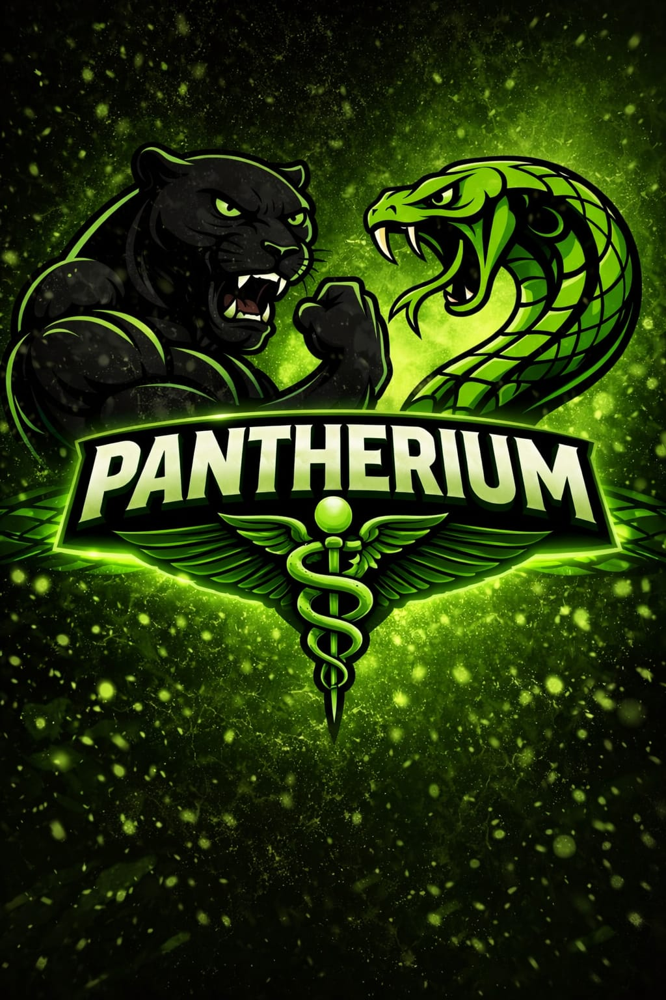
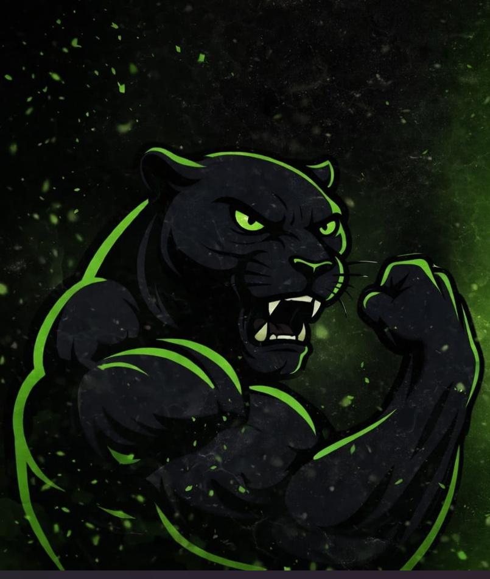
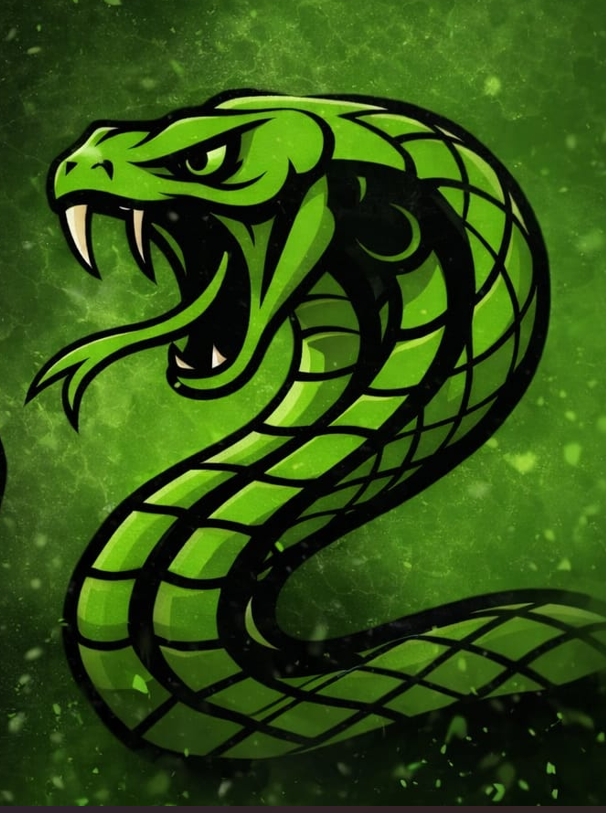
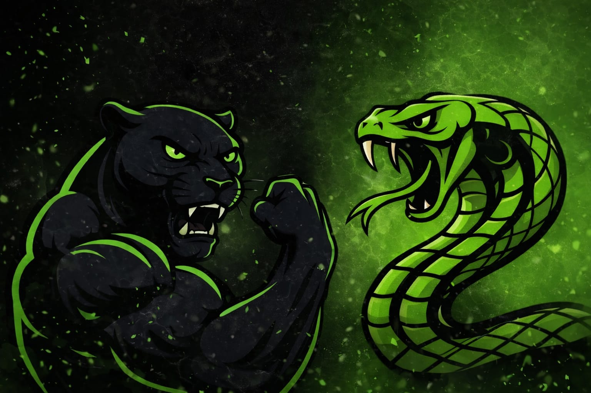
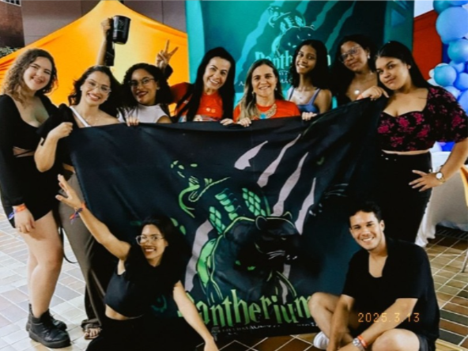
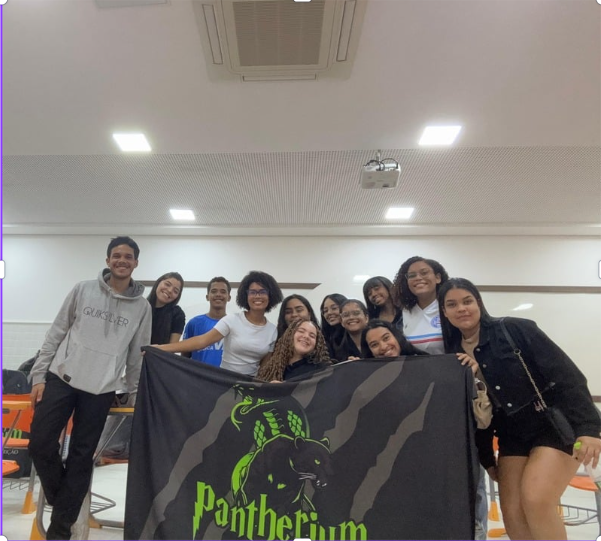

Atlética de Enfermagem
Mais que uma atlética.
Uma identidade.
Força, união e propósito dentro e fora da Enfermagem.
Uma Atlética é uma organização formada por estudantes universitários com foco principal na integração esportiva, social e cultural dos alunos do curso. É um espaço de construção coletiva, identidade e representatividade.
A Pantherium nasceu do desejo de criar pertencimento dentro da Enfermagem — um curso que exige muito de seus alunos e que merecia uma força de união à sua altura. Somos atlética, mas somos também comunidade, família e movimento.
Conheça nossa trajetóriaOrganizamos e treinamos times esportivos, representando a Enfermagem em competições universitárias.
Promovemos eventos, festas e ações sociais que fortalecem os laços entre os estudantes.
Criamos momentos de conexão que vão além da sala de aula, aproximando calouros e veteranos.
Fortalecemos a identidade acadêmica e o orgulho de ser estudante de Enfermagem.
Uma trajetória marcada por coragem, superação e a construção de uma identidade que veio para ficar.
A Pantherium foi fundada em 2023 a partir da iniciativa de Isabella Vitória e Thainá Souza, dois nomes que acreditaram no potencial de criar algo grandioso dentro da Enfermagem. Naquele primeiro momento, a atlética representava tanto o curso de Enfermagem quanto o de Nutrição.
O nome Pantherium surgiu da fusão entre "pantera" e "império" — a pantera como símbolo de força, determinação e coragem; o império representando poder, autoridade e ambição. Uma combinação que definia exatamente o espírito que seus fundadores queriam transmitir.
No começo, o projeto era pouco conhecido. Mas com dedicação e trabalho constante, a Pantherium foi crescendo aos poucos, ganhando visibilidade dentro da instituição. Um dos marcos mais importantes desse período foi a participação na FINC promovida pelo Centro Universitário UNEF, que colocou a atlética em evidência e consolidou sua presença.
Durante esse período, aconteceram eventos, palestras, a venda de canecas personalizadas e a estruturação de novos projetos. Bruna Aguiar, que viria a se tornar vice-presidente, teve papel fundamental nessa fase de consolidação, sendo peça essencial nos momentos de dificuldade em que quase tudo quase parou.
Kaio Silva teve contribuição essencial na construção da identidade visual e institucional da atlética, ajudando a dar forma ao que a Pantherium representa hoje. A cobra verde passou a compor a identidade junto à pantera — não apenas como símbolo estético, mas como representação direta da área da saúde, da sabedoria e do compromisso com a vida.
Em 2025, o curso de Nutrição se desligou da Pantherium para formar uma associação própria. A partir desse momento, a Pantherium passou a ser exclusivamente da Enfermagem — uma decisão que fortaleceu ainda mais a identidade do grupo e aprofundou o sentimento de pertencimento dentro do curso.
Hoje, sob a presidência de Isabella Vitória e com uma diretoria sólida e comprometida, a Pantherium segue crescendo como símbolo de força, união e representatividade da Enfermagem.
Mais de dois anos após sua fundação, a Pantherium é uma marca consolidada, respeitada e amada dentro da Enfermagem. Cada ação, cada evento, cada competição carrega consigo o propósito de mostrar que Enfermagem tem voz, tem presença e tem alma. O caminho foi duro — mas cada obstáculo só tornou a atlética mais forte.
Dois símbolos poderosos que juntos contam a história de quem somos: força de atleta, sabedoria de cuidador.

Símbolo da Atlética
A pantera negra é o coração da Pantherium. Ela representa a essência do espírito esportivo da atlética — a agilidade, a força inabalável e a coragem de quem nunca recua. Uma pantera não espera o momento perfeito: ela age, avança e vence.
Dentro da nossa identidade, a pantera é quem somos quando estamos em campo, nas competições, na torcida, nas conquistas. É a energia que move o grupo.

Símbolo da Enfermagem
A cobra verde é a alma da Enfermagem dentro da Pantherium. Presente em símbolos da saúde há milênios — do Bastão de Asclépio ao Caduceu — a cobra representa sabedoria, renovação, cura e o profundo compromisso com a vida humana.
Ela nos lembra de onde viemos e do que somos: futuros profissionais de saúde que cuidam, protegem e renovam. A cobra é nossa conexão com o propósito maior da profissão.

A pantera traz a garra. A cobra traz o conhecimento. Juntas, representam o equilíbrio perfeito entre força e propósito — o que é ser um estudante de Enfermagem que também é Pantherium.
A Pantherium atua em múltiplas frentes para garantir que cada estudante de Enfermagem tenha uma experiência universitária completa e inesquecível.
Organizamos e treinamos times em diversas modalidades esportivas, levando a bandeira da Enfermagem para competições universitárias com garra e determinação.
Criamos experiências memoráveis através de festas, eventos sociais e encontros que fortalecem os laços entre os estudantes do curso.
Promovemos ações que aproximam calouros e veteranos, criando uma rede de apoio que vai além da sala de aula e facilita a jornada universitária.
Realizamos ações sociais que refletem o espírito da Enfermagem: cuidar, servir e impactar positivamente a comunidade ao redor.
Damos voz ao estudante de Enfermagem, representando o curso com orgulho e demonstrando que a área da saúde tem força, presença e identidade.
Cultivamos o sentimento de pertencimento e o orgulho de ser estudante de Enfermagem, criando memórias e conexões que duram para sempre.
As pessoas que fazem a Pantherium acontecer todos os dias — com dedicação, liderança e amor pelo que fazem.
Fundadora e presidente da Pantherium. A mente e o coração por trás de tudo que a atlética representa hoje.
Pilar fundamental na consolidação da Pantherium. Presente nos momentos mais difíceis e nos mais vitoriosos.
Registros reais da Pantherium — união, presença e vivência acadêmica.


Ser Pantherium é fazer parte de algo maior — de uma identidade, de uma comunidade e de uma história que está sendo escrita agora. Venha fazer parte.
Seguir no Instagram